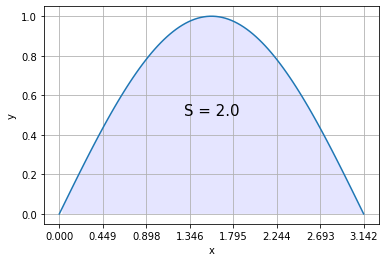

Определенные интегралы
Contents
Определенные интегралы¶
Подмодуль scipy.integrate позволяет приближенно вычислять значение определенных интегралов
Одномерные¶
Функция scipy.integrate.quad позволяет проинтегрировать функцию \(f: \mathbb{R} -> \mathbb{R}\). Вызов функции quad(f, a, b) приближенно находит значение интеграла
\[
\int_a^b f(x) dx.
\]
import numpy as np
from scipy import integrate
from matplotlib import pyplot as plt
f = np.sin
a, b = 0, np.pi
I, _ = integrate.quad(f, 0, np.pi)
x = np.linspace(0, np.pi, 100)
y = f(x)
plt.plot(x, y)
plt.fill_between(x, np.zeros(100), y, where=(y>0), facecolor='blue', alpha=0.10)
plt.xticks(np.linspace(0, np.pi, 8))
plt.text(np.pi/2, 0.5, f"S = {I}", fontdict={"size":15, "ha": "center"})
plt.xlabel("x")
plt.ylabel("y")
plt.grid()
plt.show()

Параметры \(a\) и \(b\) могут принимать значения -inf и +inf.
import numpy as np
from scipy import integrate
from matplotlib import pyplot as plt
def f(x):
return 1. / (x ** 2)
a, b = 1, np.inf
I, _ = integrate.quad(f, a, b)
x = np.linspace(a, 7, 100)
y = f(x)
plt.plot(x, y)
plt.fill_between(x, np.zeros(100), y, where=(y>0), facecolor='blue', alpha=0.10)
plt.xticks(np.linspace(a, 7, 8))
plt.text(np.pi/2, 0.1, f"S = {I}", fontdict={"size":15, "ha": "center"})
plt.xlabel("x")
plt.ylabel("y")
plt.grid()
plt.show()

Двухмерные¶
Функция scipy.integrate.dblquad позволяет вычислять интегралы вида
\[
\int_a^b \int_{g(x)}^{h(x)} f(x, y) dx dy.
\]
В качестве примера возьмём интеграл функции \(f = \sqrt{x^2 + y^2}\) в области \(D\) совпадающей с кругом единичного радиуса с центром в начале:
\[
\int_{-1}^{1} \int_{-\sqrt{1 - x^2}}^{\sqrt{1-x^2}} \sqrt{x^2 + y^2} dx dy = 2 \pi \int_{0}^1 r^2 dr = \frac{2 \pi}{3}.
\]
import numpy as np
from scipy import integrate
from matplotlib import pyplot as plt
import matplotlib
matplotlib.rcParams.update({"font.size": 16})
def h(x):
return np.sqrt(1 - x**2)
def g(x):
return -h(x)
def f(x, y):
return np.sqrt(x**2 + y**2)
a, b = -1, 1
I, _ = integrate.dblquad(f, -1, 1, g, h)
print(f"Вычисленное значение интеграла: {I}, точное значение: {2 * np.pi / 3}.")
x = np.linspace(a, b, 30)
y = np.linspace(a, b, 30)
x, y = np.meshgrid(x, y)
z = f(x, y)
fig, ax = plt.subplots(subplot_kw={"projection": "3d"})
fig.set_size_inches(10, 9)
surf = ax.plot_surface(x, y, z, cmap="coolwarm")
ax.set_xlabel("x")
ax.set_ylabel("y")
ax.set_zlabel("f(x, y)")
ax.set_xticks([-1, 0, 1])
ax.set_yticks([-1, 0, 1])
ax.set_zticks([0, 1])
plt.show()
Вычисленное значение интеграла: 2.0943951023924106, точное значение: 2.0943951023931953.